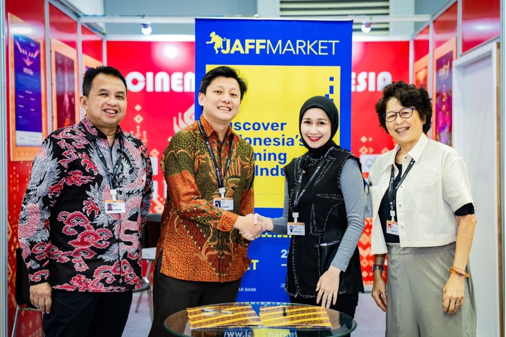

← Selected work
JAFF Market

In 2025, concurrent with my role at Dialogue Communications, I was also appointed as Marketing Communications Assistant Manager for JAFF Market, the business and networking platform of the Jogja-NETPAC Asian Film Festival (JAFF). I led the integrated marketing communications strategy across public relations, social media, branding, website, and documentation, coordinating a team of 36 core members and 26 volunteers.
The main challenge was to strengthen JAFF Market’s visibility and establish it as a credible film industry marketplace, distinct from the festival itself. This required an integrated communication approach that could build industry credibility, expand audience reach, and create a consistent brand experience across digital, media, and on-site touchpoints.
Through the integrated marketing communications strategy, I helped strengthen JAFF Market’s visibility among industry professionals while expanding its reach to broader audiences. The communication ecosystem also supported the market’s digital participation and business networking objectives.

VarietyJAFF Market Partners with Cinepoint to Track Indonesia’s Box Office Surge as Local Films Outpace Hollywood Screen Daily“It is time”: how the fast-growing Indonesian film industry inspired the inaugural JAFF Market
Screen Daily“It is time”: how the fast-growing Indonesian film industry inspired the inaugural JAFF Market Asian Movie PulseJAFF Market Opens Submissions for Filmmakers and Creators Across Asia
Asian Movie PulseJAFF Market Opens Submissions for Filmmakers and Creators Across Asia AntaraJAFF dorong sineas daftar program JAFF Market untuk jaring koneksi
AntaraJAFF dorong sineas daftar program JAFF Market untuk jaring koneksi